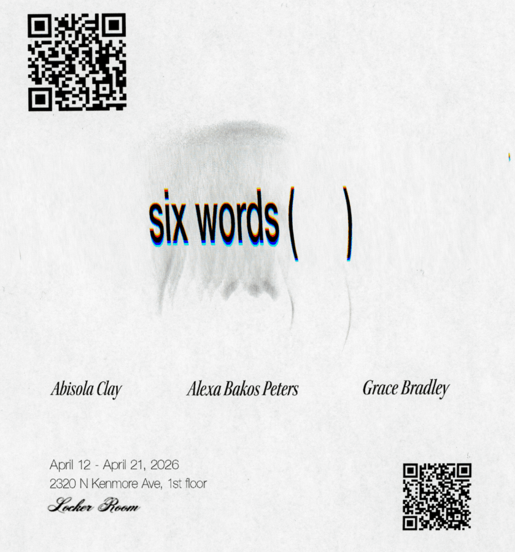

six words ( )
Our next show ~ six words ( ) featuring work by Abisola Clay, Alexa Bakos Peters, and Grace Bradley on view Sunday 4/12 until 4/21
Keep your eyes on the spectacle @abisola.clay @bankrupt_on_selling @bad_case_of_the_stripes

Our next show ~ six words ( ) featuring work by Abisola Clay, Alexa Bakos Peters, and Grace Bradley on view Sunday 4/12 until 4/21
Keep your eyes on the spectacle @abisola.clay @bankrupt_on_selling @bad_case_of_the_stripes